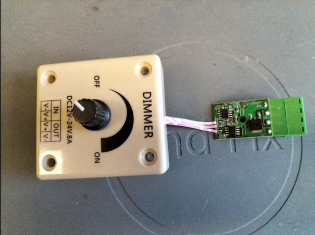
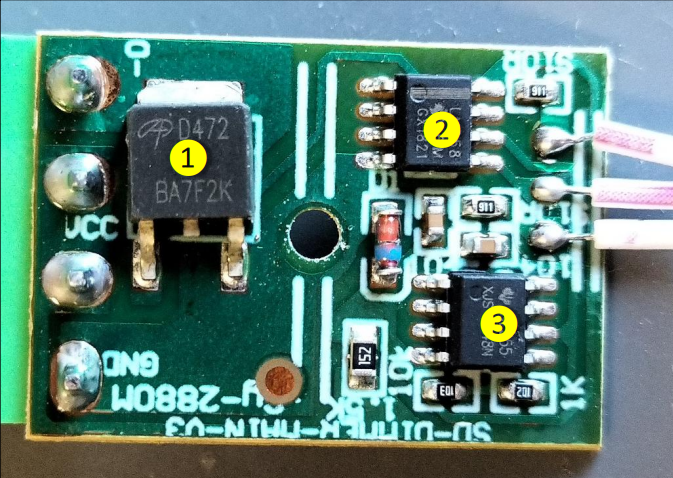
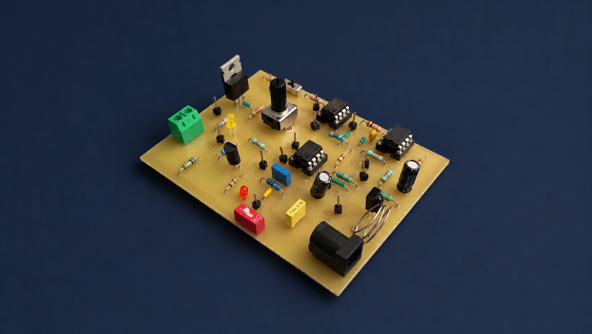
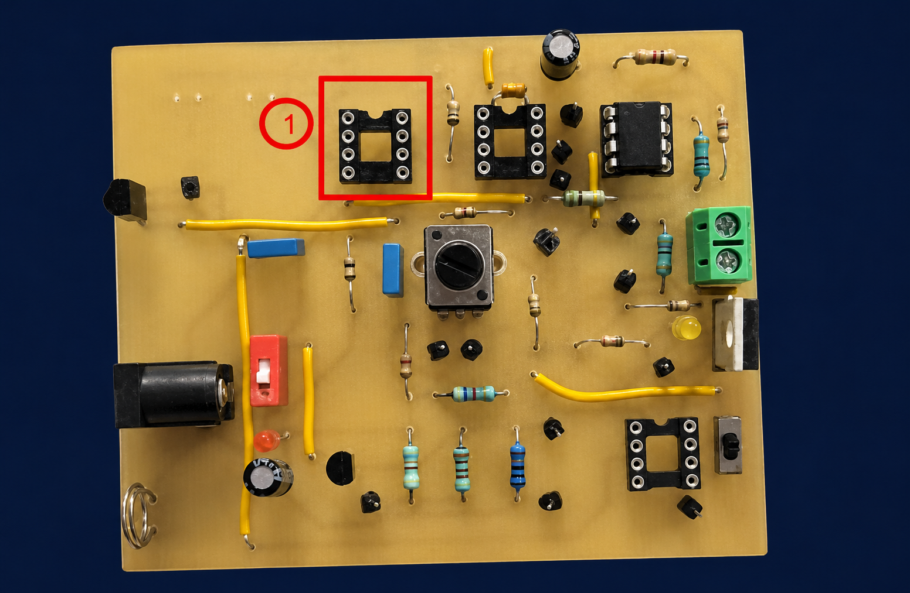
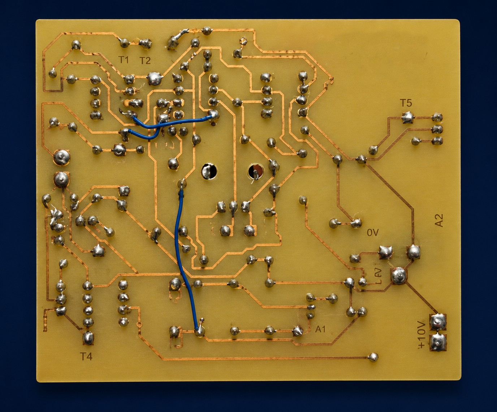
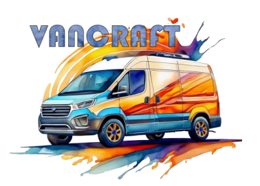
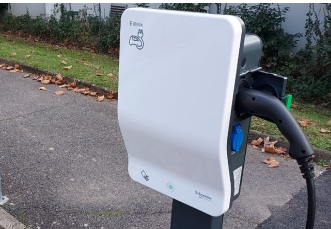
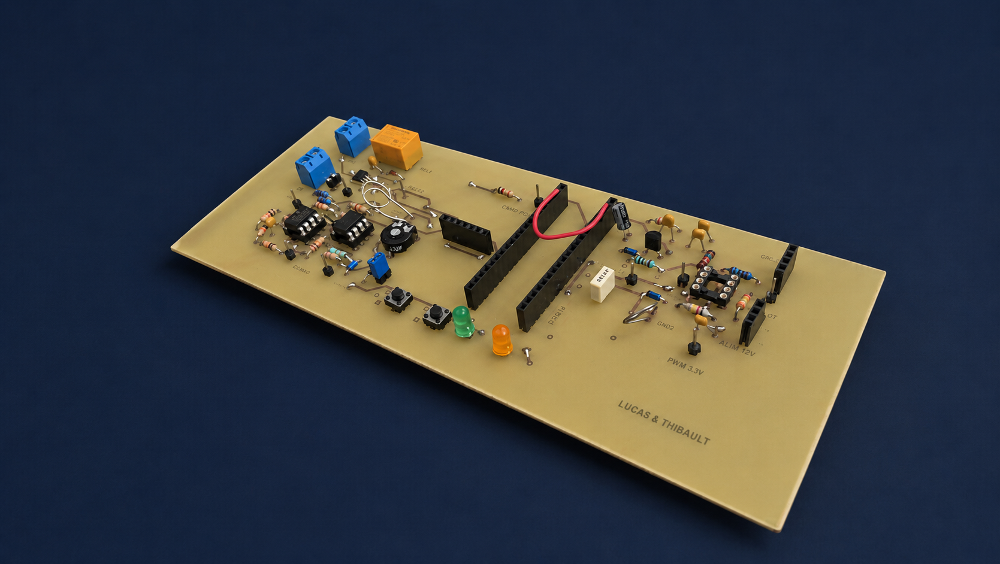
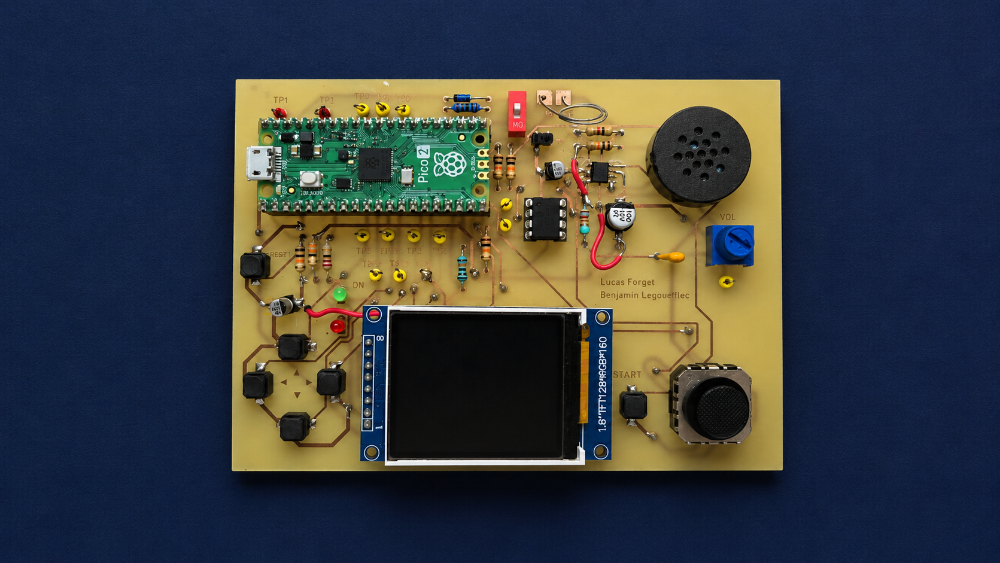
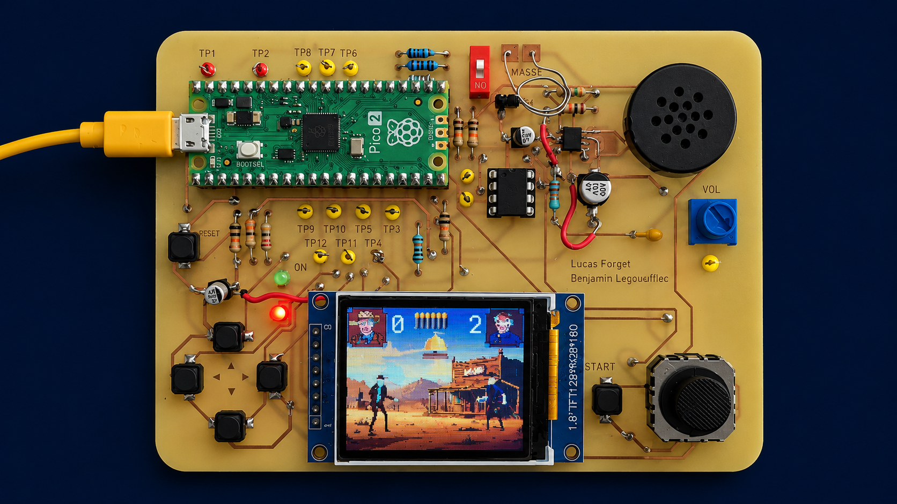

Première année du BUT GEII : acquisition des fondamentaux en électronique, Programmation (Python,Automatisme) et mathématiques.
_Modules suivis
› Cliquez sur un module pour déplier — puis sur une compétence pour voir les projets liés
ConcevoirProduire un analyse / Réaliser un prototype / Rédiger un dossier .
[x]›
Mener une conception partielle d'un projet en intégrant une démarche méthodique de gestion de projet, permettant de planifier, organiser et suivre efficacement les différentes phases de conception.
_Notes & contexte
Cette compétence se décompose en trois sous-parties principales. La première consiste à analyser les besoins et le fonctionnement d'un système afin d'en comprendre les différentes fonctions. La deuxième vise à concevoir et tester des solutions techniques, qu'elles soient matérielles ou logicielles, à travers la réalisation d'un prototype. Enfin, la troisième porte sur la préparation de la fabrication, en rédigeant les documents techniques nécessaires à partir du dossier de conception.
_Compétences (cliquez pour déplier)
Produire une analyse fonctionnelle d'un produit
›
Analyse d'une carte éléctronique
_Rubrique : contexte

La conception d’un produit repose fréquemment sur l’analyse de solutions déjà existantes. Lors de la première SAÉ, nous avons étudié le fonctionnement d’un variateur de lumière pour ampoules halogènes, connues pour leur forte consommation d’énergie. À partir de cette analyse, il nous a été demandé de concevoir un nouveau variateur spécialement adapté aux ampoules LED.
Cette SAÉ nous a permis de débuter dans la conception d'un carte éléctronique.
_Rubrique : résultat
Avec cette analyse nous avons pus comprendre que pour créer un variateur de lumière nous avions besoin dans un premier temps d’une alimentation puis d’un Transistor MOSFET AOD472 (1) pour moduler la tension puis on utilise un régulateur (2) couplé à un AOP(3) Ce qui nous donne un “Comparateur” qui vas pouvoir être utilisé à l'aide d’un potentiomètre pour ainsi faire varier l’intensité lumineuse de l’ampoule.
Grâce a cette analyse nous avons pus réaliser un prototype mais pour une ampoule LED

_Projets en rapport
Réaliser un prototype pour des solutions techniques matériel et/ou logiciel
›
Variateur de lumière›
_Contexte

Le variateur de lumière a été notre premier projet où l'on devait concevoir une carte électronique de toute pièce pour un van aménagé. Cette carte avait pour but de faire varier l'intensité lumineuse d’une ampoule à LED pour économiser le plus d’énergie pour les long voyage avec le van.
(Cliquer sur le lien en dessous pour connaitre plus de ce projet)
_Problème rencontrer
Le problème rencontrer durant la fabrication a était que nous avions poser un circuit intégrer en trop (voir cadre rouge) et le problème a était que ce composant a dérégler tout la partie "comparateur" ce qui a empêcher le fonctionnement normal de l'allumage de l'ampoule.

Pour régler ce probléme nous avons du déssouder ce composant mais aussi gratter les pistes de cuivre relier à lui et ainsi refaire les piste de cuivre a la main a l'aide des cables bleu

_Conclusion

Bien qu'il y est différentes erreurs durant la fabrication, ce prototype à pu être utiliser et a pu fonctionner en condition réel ce qui montre que qu'en bien même une erreut survient il est toujour possible de la réparer.
(Cliquer sur le lien en dessous pour connaitre plus de ce projet)
Borne de recharge électrique›
_Contexte

Pour ce projet nous nous somme basé sur les bornes éléctriques utilisée sur les parking de l'iut pour recharger tout type de véhicule. Nous avons étudier le borne et nous nous en avons conclu qu'il y avait deux partie a réaliser surle carte, la première a été l'éléctronique de puissance et la deuxième a était de mettre en place la gestion des signaux éléctrique que ce soit pour la sécurité et la charge du véhicule mais aussi de l'interaction homme machine.
_Résultat
Après être passer par toute les étapes de création, du schéma éléctrique jusqu'a la soudure de chaques composants on obtient une borne de recharge fonctionnelle éléctroniquement parlant mais il manque une seul partie qui est la partie signal parler précédment qui est essenteil pour le fonctionnement total de la carte du au fait que c'est cette partie controle la charge de la batterie par l'intermédiaire de la raspberry pi pico (par encore présente sur la photo).

Console rétrogaming›
_Contexte

Pour la spécialité ESE (éléctronique & système embarqué) nous avons du réaliser une console rétrogaming portable qui pourrait s'apparenter à une gameboy. Cette carte est composé d'un système de son, un système d'affichage afin de voir le jeu et bien sur un 6 boutons et un joystick pour jouer au jeu. Toute ces partis sont piloter par une raspberry pi pico 2 programmer avec CircuitPython.
_Problème Rencontré
Durant la création du schéma de câble nous avons oublier de relier deux composant a leur alimentaion ce qui a eu pour effet au moment du test de la carte de provoquer un court circuit qui a fait griller le circuit intégrer attribuer la gestion du son.
_Solution Trouvé
La solutions pour résoudre ce problème à était en premier temps de dessouder et de resouder un nouveau circuit intégrer puis de gratter les pistes de cuivre provoquant le court-circuit et ainsi resouder les nouvelles piste grâce au cable rouge vu sur la photos
_Conclusion
Il ne nous as rester plus qu'à coder les différent jeu vidéo à notre disposition, le premier a était le jeu Simon qui est un jeu de mémorisation de couleur très connu des années 80, nous avons ensuite codé un deuxième jeu appelé GunfFight qui est un jeu de reflex représentent un duel de cowboy au far west (voir photo)

_Projets en rapport
Rédiger un dossier de fabrication
›
Utilisation de l'oscilloscope, du GBF et du multimètre en laboratoire.
_Contexte
Remplacez ce texte par la description du dossier 1 : objectif, projet concerné, contenu principal.
Précisez les contraintes, outils utilisés et ce que ce dossier démontre de votre maîtrise.
_Contexte
Remplacez ce texte par la description du dossier 2 : objectif, projet concerné, contenu principal.
Précisez les contraintes, outils utilisés et ce que ce dossier démontre de votre maîtrise.
_Contexte
Remplacez ce texte par la description du dossier 3 : objectif, projet concerné, contenu principal.
Précisez les contraintes, outils utilisés et ce que ce dossier démontre de votre maîtrise.
Utilisation de l'oscilloscope, du GBF et du multimètre en laboratoire.
_Rubrique : contexte
Décrivez ici ce que montre la photo : situation, manipulation, montage ou résultat. Vous pouvez dupliquer ce bloc .rubric autant de fois que nécessaire et changer le titre (<h5>).
Astuce : utilisez la classe media-row right pour mettre l'image à droite à la place.
_Rubrique : résultat
Second exemple avec image à droite. Remplacez par votre propre contenu : mesures, captures d'écran, schémas, photos de manip.
_Projets en rapport
_Outils & technos
VérifierAppliquer un procédure d'essais / Identifier un disfonctionnement & Décrire ses effets.
[x]›
Réaliser les essais et les mesures de validation d’un système afin de vérifier son bon fonctionnement, d’évaluer ses performances et de s'assurer qu'il répond aux exigences définies lors de sa conception.
_Notes & contexte
Cette compétence se décompose également en trois sous-parties. La première consiste à mettre en œuvre une procédure d'essai afin de vérifier le comportement du système dans différentes conditions. La deuxième vise à détecter et localiser les dysfonctionnements pouvant affecter son fonctionnement. Enfin, la troisième consiste à analyser les conséquences d'un dysfonctionnement et à en décrire les effets sur les performances et le comportement du système.
_Compétences (cliquez pour déplier)
Pointeurs & allocation mémoire
›
Maîtrise des pointeurs, malloc/free, gestion fine de la mémoire.
_Rubrique : contexte
Décrivez ici ce que montre la photo : situation, manipulation, montage ou résultat. Vous pouvez dupliquer ce bloc .rubric autant de fois que nécessaire et changer le titre (<h5>).
Astuce : utilisez la classe media-row right pour mettre l'image à droite à la place.
_Rubrique : résultat
Second exemple avec image à droite. Remplacez par votre propre contenu : mesures, captures d'écran, schémas, photos de manip.
_Projets en rapport
Structures de données
›
Structs, unions, énumérations, listes chaînées.
_Rubrique : contexte
Décrivez ici ce que montre la photo : situation, manipulation, montage ou résultat. Vous pouvez dupliquer ce bloc .rubric autant de fois que nécessaire et changer le titre (<h5>).
Astuce : utilisez la classe media-row right pour mettre l'image à droite à la place.
_Rubrique : résultat
Second exemple avec image à droite. Remplacez par votre propre contenu : mesures, captures d'écran, schémas, photos de manip.
_Projets en rapport
Programmation Arduino
›
Premiers programmes embarqués sur ATmega.
_Rubrique : contexte
Décrivez ici ce que montre la photo : situation, manipulation, montage ou résultat. Vous pouvez dupliquer ce bloc .rubric autant de fois que nécessaire et changer le titre (<h5>).
Astuce : utilisez la classe media-row right pour mettre l'image à droite à la place.
_Rubrique : résultat
Second exemple avec image à droite. Remplacez par votre propre contenu : mesures, captures d'écran, schémas, photos de manip.